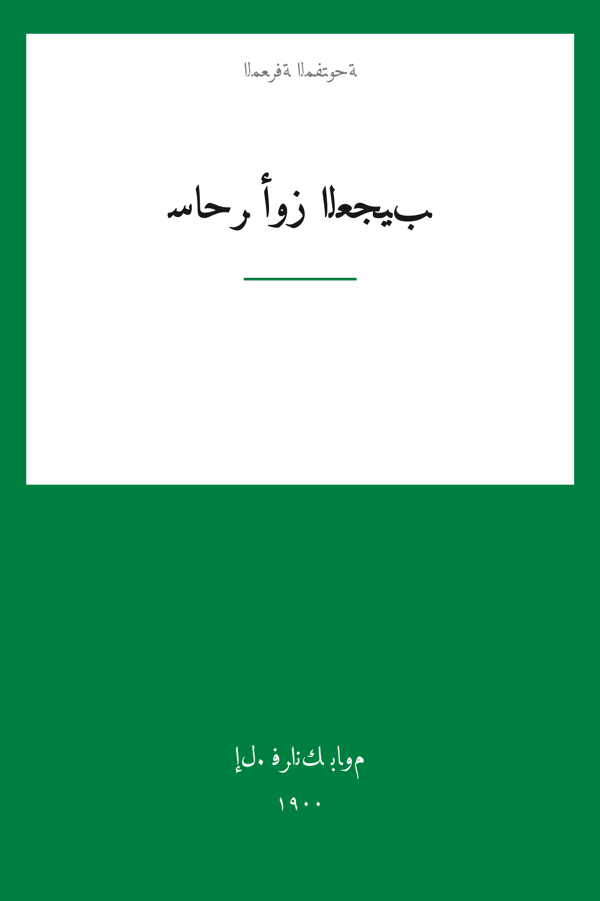

The Wonderful Wizard of Oz
ساحر أوز العجيب
الأدب
ملك عام
ترجمة كاملة
ساحر أوز العجيب — الفتاة دوروثي يقتادها إعصارٌ ببيتها من سهول كانساس إلى أرض أوز، فتسقط على الساحرة الشريرة الشرقية وتلبس حذاءها الفضي، ثم تنطلق على طريق الطوب الأصفر مع الكلب توتو والفزاعة التي تريد عقلاً، ورجل الخشب الصفيحي الذي يريد قلباً، والأسد الجبان الذي يريد شجاعة، إلى مدينة الزمرد حيث ينتظرهم الساحر الذي لم يره أحد. الكلاسيكية الأمريكية الأولى لأدب الأطفال، بترجمة كاملة مع مقدمة باوم وخمسة وعشرين فصلاً.
| المؤلف | إل. فرانك باوم — L. Frank Baum |
| سنة النص الأصلي | ١٩٠٠ |
| كلمات المصدر (الإنجليزية) | ٤٠٠٠٠ |
| كلمات الترجمة (العربية) | ٢٧٣١٧ |
| مقاطع الترجمة المدققة | ٢٧ |
| مدة القراءة التقريبية | ≈ ٦٢١ دقيقة |
الترخيص والحقوق: النص الأصلي (1900) في الملك العام. هذه الترجمة العربية منشورة بإذن حر. المصدر: gutenberg.org/ebooks/55